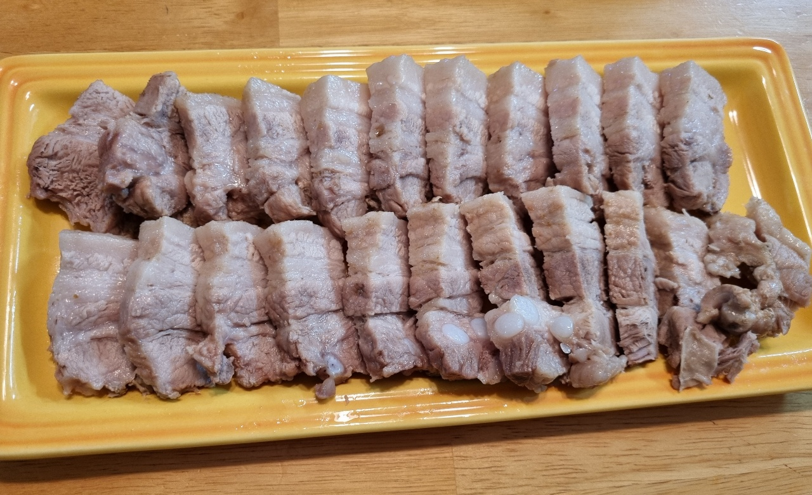

수육

- 재료
통삼겹살 1kg, 양파 1/2개, 대파 1개, 통마늘 10알, 통후추, 월계수잎 5장, 커피 1T, 된장 1T, 물 넉넉히
- 조리순서
- 냄비에 물을 넉넉히 넣고 양파 1/2개, 대파 1개, 통마늘 10알, 통후추, 월계수잎 5장, 커피 1T를 넣습니다.
찜기를 얹고 통삼겹살을 올려서 뚜껑을 덮은 상태로 끓입니다.
- 센불로 팔팔 끓으면 된장 1T를 넣어 잘 풀어줍니다.
센불로 30분 삶다가 중불로 줄여서 30분간 더 삶아줍니다.
- 수육을 꺼내서 얇게 썰어주면 완성입니다.